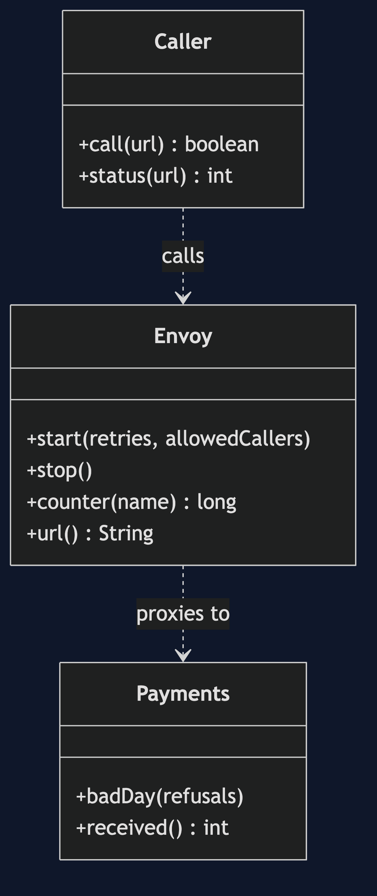
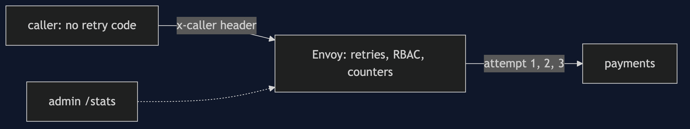
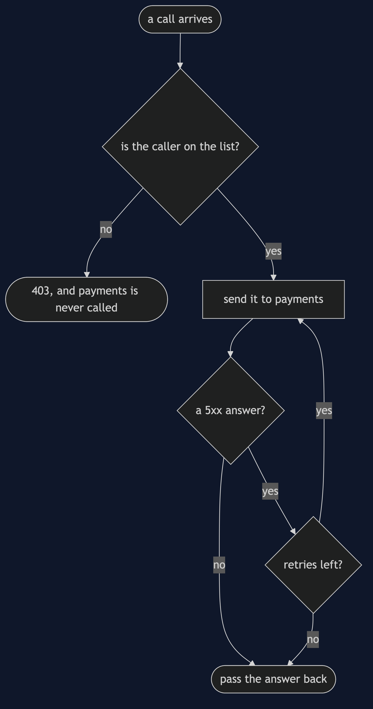
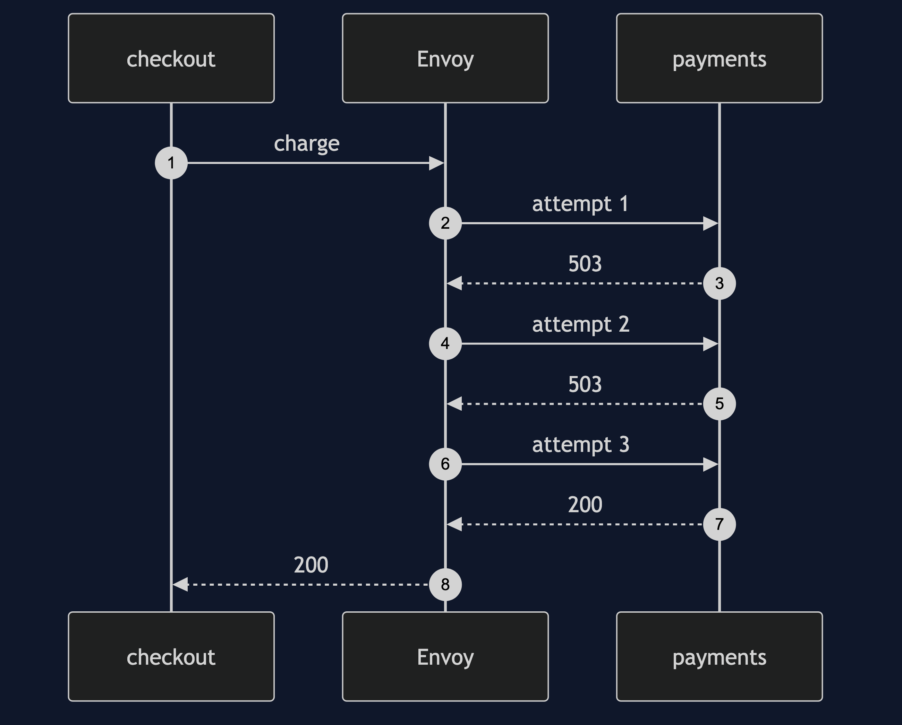
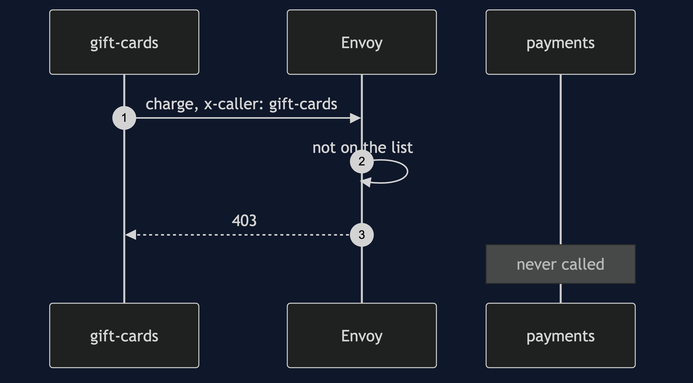

Service Mesh with Envoy Pattern
src/main/java/com/jk/explore/meshenvoy/
├── MeshEnvoyDemo.java the six acts
├── Envoy.java writes the configuration, runs the container, reads its counters
├── Payments.java the payment service: a real HTTP server that refuses its first calls
├── Caller.java a service that calls payments, with or without retry code
├── Shell.java runs dockerWith Envoy, the proxy retries, refuses and counts for a service that has none of that code.
This project is the framework version of Service Mesh. That project built the mechanism by hand. This one shows the same idea inside Envoy. It does not re-teach the pattern. It shows what Envoy adds, the failures that are its own, and what it costs.
Run
./gradlew runSix acts. The partner project, Service Mesh, built the mechanism by hand. Here the same idea runs through Envoy, and every count comes from real output.
ONE. Each service carries its own.
the payment service refuses its first 2 calls, for each caller in turn. with retry code of 3, 0 and 1 tries: checkout worked, refunds failed, reports failed.
three services, three copies of the retry code, three different behaviours.
TWO. A proxy beside the service.
Envoy is told to retry 5xx answers up to 3 times. the checkout has no retry code. the call worked. the payment service received 3 calls, and Envoy counts 2 retries.
THREE. Change the policy once.
one setting in Envoy's configuration changed, from 3 retries to 0. the same call failed. services changed or redeployed: 0.
FOUR. Who is calling.
only checkout and refunds are allowed. checkout: status 200. gift-cards: status 403.
the payment service received 1 call. the proxy turned the other one away before it got there.
here the caller's name is a header. a real mesh checks a certificate instead, which a service cannot forge.
FIVE. Numbers for free.
read from Envoy, and not from any service: requests to payments 3, retries 2, retries that ended in success 1.
no service counted anything. the proxy did.
SIX. The bill.
one call, with 2 refusals: the payment service received 3 calls. retrying multiplies the load on a service that is already struggling.
every call now crosses a proxy, which is a second process and a second network hop. this demo needed 1 more container for 1 service.
and the policy is in a configuration file of about 45 lines, that someone must read, and keep right.Test
./gradlew test1 test classes, 4 test methods, offline, with each Spring context started inside the test, and no server.
Technologies and versions
| What | Version | Why it is here |
|---|---|---|
| Java | 21 | The repository standard, via the Gradle toolchain block |
| Gradle | 9.2.1 | The wrapper in this directory |
| Docker | 24+ | Runs Envoy |
| Envoy | v1.37 | The proxy |
| JUnit 5 | 5.10.2 | Test runner; the Envoy test is skipped when Docker is missing |
See docs/dependencies.md.
Learning Material
| Document | What it covers |
|---|---|
docs/problem-statement.md | The partner's proxies, and what is new |
docs/service-mesh-with-envoy-pattern-explained.md | A real proxy, and its real counters |
docs/class-diagram.md | The types |
docs/architecture-diagram.md | Callers, Envoy and payments |
docs/data-flow-diagram.md | What Envoy does with one call |
docs/sequence-diagram.md | Written for a listener with the screen off |
docs/uml-diagram.md | Four sequences |
docs/animation.html | The six acts in a browser |
docs/prerequisites.md | What you need to know |
docs/session.md | A one-hour taught session |
docs/spec.md | The generated specification |
docs/youtube.md | Title, description and chapters |
docs/dependencies.md | What Envoy is, what it costs, and that skipping this project loses none of the pattern |
The pattern in one picture

Where each piece sits

How one request moves

Who calls whom, in order

All four sequences

Video
Built from video/scenes.py by video/build_video.sh. The rendered file is not committed; see the repository README for why.
Where you have already met this
Istio, Consul Connect, AWS App Mesh, and many gateways and load balancers.
When this is too much
For a few services, a shared library is simpler. A proxy for each service is more processes to run and understand.
Where this sits
This project pairs with Service Mesh, and is a framework version in platform-design-patterns.